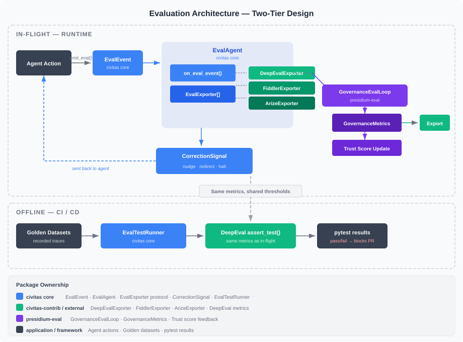
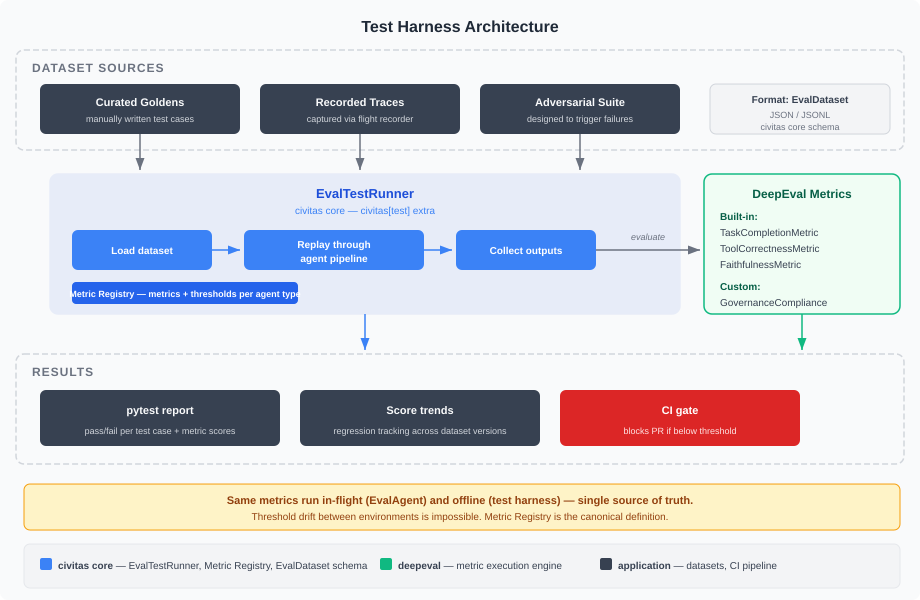
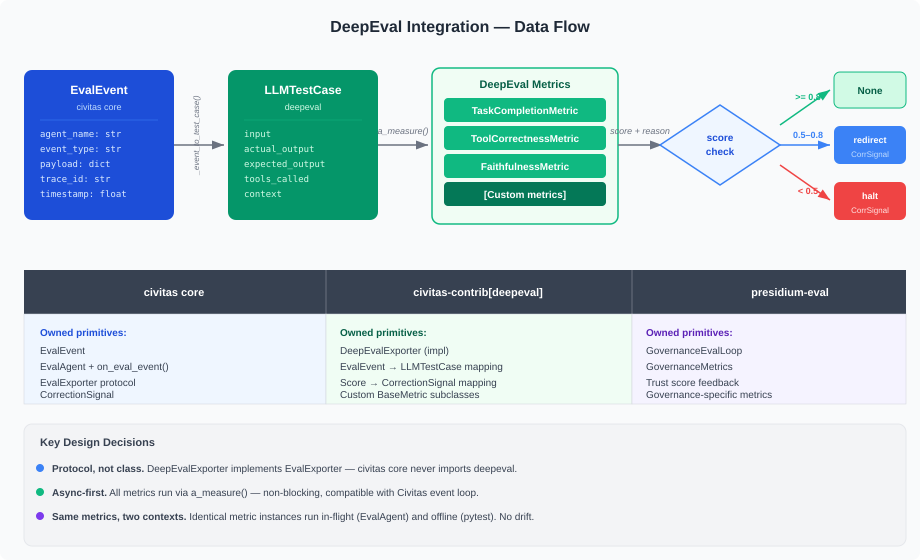

Design: Eval Framework¶
presidium-eval— Governance-aware evaluation, test harness, and external platform integration.
Status: Draft (revised)
Package: presidium-eval
Milestone: M4
Depends on: civitas (EvalLoop, EvalAgent, EvalExporter), presidium-registry (trust scores)
Problem Statement¶
Agents in production need two kinds of evaluation:
- Output quality — Did the agent produce a correct, useful result? (Task completion, tool selection accuracy, faithfulness to context.)
- Governance compliance — Did the agent stay within policy? Is its trust score trending correctly? Did it use only authorized tools?
Existing eval tools (Fiddler, Arize, Langfuse) address output quality as post-hoc dashboards. They don't evaluate governance compliance, they don't enforce thresholds at runtime, and they don't provide an offline regression harness that uses the same metrics as production.
Civitas provides the runtime primitives (EvalAgent, EvalExporter, CorrectionSignal) but defines no metrics, no test harness, and no governance integration. There is a gap between "we can observe" and "we can systematically evaluate and regress."
Three concrete gaps:
Gap 1 — No in-flight quality scoring. An agent that drifts from its task or selects wrong tools generates no signal until a human reviews the output. The EvalAgent hook exists but ships with no metric implementations.
Gap 2 — No offline regression harness. When you change an agent's prompt, model, or tool set, there is no way to run a suite of recorded tasks and assert that quality didn't regress. This is the equivalent of shipping code without running the test suite.
Gap 3 — No governance-quality feedback loop. Governance metrics (policy compliance, grant utilization, budget consumption) and quality metrics (task completion, tool correctness) are evaluated by separate systems with no shared vocabulary. Trust scores cannot incorporate quality signals, and quality evaluations cannot incorporate governance context.
Goals¶
- Define a two-tier evaluation architecture: in-flight (runtime) and offline (CI/CD)
- Introduce a test harness for offline agent regression testing with golden datasets
- Integrate DeepEval as the recommended (not required) eval backend via
civitas-contrib[deepeval] - Define governance-specific evaluation metrics that extend Civitas's EvalLoop
- Close the feedback loop: eval scores → trust score adjustments → autonomy changes
- Export governance metrics to external platforms (Fiddler, Arize, Langfuse, Prometheus)
Non-Goals¶
- Replace Fiddler/Arize — Presidium generates governance metrics, they dashboard them
- Content safety (hallucination detection, toxicity) — that's guardrails, not structural governance
- Real-time policy enforcement — that's
presidium-policy - Mandating DeepEval — it's the recommended backend, but the architecture is backend-agnostic via
EvalExporter
Architecture¶

Two-Tier Design¶
Evaluation runs at two points in the agent lifecycle:
| Tier | When | Where | Latency budget | Purpose |
|---|---|---|---|---|
| In-flight | Every agent action, in real time | Inside the Civitas supervision tree (EvalAgent) |
< 500ms for deterministic; async for LLM-as-Judge | Catch violations as they happen; emit CorrectionSignals; feed trust scores |
| Offline | CI/CD, pre-merge, scheduled | pytest suite (EvalTestRunner) |
Unbounded | Regression testing; golden dataset validation; threshold assertion |
The same metric instances run in both tiers. This is a non-negotiable design constraint — if in-flight and offline use different metrics, thresholds will drift and regressions will be invisible.
Three Layers of Evaluation¶
| Layer | Owns | Metrics | Package |
|---|---|---|---|
| Agent quality | Did the agent produce a good result? | TaskCompletion, ToolCorrectness, Faithfulness, custom | civitas-contrib[deepeval] or any EvalExporter |
| Governance compliance | Did the agent follow policy? | PolicyCompliance, GrantUtilization, BudgetAdherence, DriftScore | presidium-eval |
| Trust feedback | Should the agent's autonomy change? | Composite of quality + governance scores | presidium-eval → presidium-registry |
Quality and governance are distinct evaluation streams (as established in the Architecture Overview):
- EvalLoop (Civitas): Did the agent produce a good output? Internal quality signal.
- presidium-eval (Presidium): Did the agent comply with policy? External accountability signal.
The trust feedback layer combines both. A high-quality agent that violates policy should not earn trust. A policy-compliant agent that produces bad outputs should not retain trust.
Design¶
In-Flight Evaluation¶
The EvalAgent is a supervised process that sits alongside application agents in the supervision tree. It receives EvalEvent messages emitted by agents via self.emit_eval(), runs metrics via its EvalExporter chain, and returns CorrectionSignal when thresholds are breached.
# Civitas core — already shipped
class EvalAgent(AgentProcess):
async def on_eval_event(self, event: EvalEvent) -> CorrectionSignal | None:
"""Override point. Return a CorrectionSignal to intervene."""
return None
Presidium extends this with governance context:
# presidium-eval — new
class GovernanceEvalAgent(EvalAgent):
"""Extends EvalAgent with governance metric collection and trust feedback."""
def __init__(
self,
name: str,
registry: AgentRegistry,
policy_engine: PolicyEngine,
metrics: list[GovernanceMetric],
exporters: list[EvalExporter] | None = None,
**kwargs: Any,
) -> None:
super().__init__(name, exporters=exporters, **kwargs)
self._registry = registry
self._policy_engine = policy_engine
self._metrics = metrics
async def on_eval_event(self, event: EvalEvent) -> CorrectionSignal | None:
# 1. Run governance metrics
governance_scores = await self._evaluate_governance(event)
# 2. Collect quality scores from exporters (DeepEval, etc.)
quality_scores = self._collect_exporter_scores()
# 3. Compute composite score
composite = self._compute_composite(governance_scores, quality_scores)
# 4. Update trust score
await self._update_trust(event.agent_name, composite)
# 5. Return CorrectionSignal if warranted
return self._score_to_signal(composite, governance_scores, quality_scores)
def _score_to_signal(
self, composite: float, governance: dict, quality: dict
) -> CorrectionSignal | None:
if composite >= 0.8:
return None
if composite < 0.4:
failed = [k for k, v in {**governance, **quality}.items() if v < 0.5]
return CorrectionSignal(
severity="halt",
reason=f"Critical eval failure: {', '.join(failed)}",
payload={"governance": governance, "quality": quality},
)
failed = [k for k, v in {**governance, **quality}.items() if v < 0.7]
return CorrectionSignal(
severity="redirect",
reason=f"Below threshold: {', '.join(failed)}",
payload={"governance": governance, "quality": quality},
)
CorrectionSignal Severity Mapping¶
| Composite score | Severity | Effect on agent | Trust delta |
|---|---|---|---|
| ≥ 0.8 | None | No correction | +0.02 per window |
| 0.4 – 0.8 | redirect |
Agent receives correction, should change approach | -0.05 |
| < 0.4 | halt |
Agent's message loop is stopped; human review required | -0.2 |
These thresholds are configurable per agent via the Metric Registry (see below).
Governance Metrics¶
@dataclass
class GovernanceMetrics:
"""Metrics computed per agent per evaluation window."""
policy_compliance_rate: float # % of actions that passed policy check
denial_count: int # Number of DENY decisions this window
approval_pending_count: int # Actions waiting for REQUIRE_APPROVAL
trust_score_delta: float # Change in trust score this window
tool_usage_authorized: float # % of tool calls to granted tools
llm_budget_utilization: float # % of LLM token/cost budget consumed
restart_count: int # Number of supervisor restarts
mean_action_latency_ms: float # Average policy evaluation latency
drift_score: float # Deviation from declared intent (0.0 = on track)
grant_violation_count: int # Attempts to access ungrated resources
Each field maps to a GovernanceMetric protocol implementation:
class GovernanceMetric(Protocol):
"""Single governance metric computed from policy engine state."""
name: str
threshold: float
async def evaluate(
self,
agent_name: str,
policy_engine: PolicyEngine,
registry: AgentRegistry,
window: TimeWindow,
) -> float: ...
Metric Registry¶
The Metric Registry is the canonical definition of which metrics run for which agent types, with what thresholds. It is the single source of truth for both in-flight and offline evaluation.
@dataclass
class MetricConfig:
"""Configuration for a single metric applied to an agent pattern."""
metric_name: str
threshold: float
severity_on_breach: Literal["nudge", "redirect", "halt"]
in_flight: bool = True # Run in EvalAgent?
offline: bool = True # Run in test harness?
@dataclass
class MetricRegistryEntry:
"""Metrics configuration for a set of agents."""
agent_pattern: str # Glob pattern, e.g. "coder-*"
metrics: list[MetricConfig]
class MetricRegistry:
"""Loads metric configurations and resolves which metrics apply to an agent."""
def __init__(self, entries: list[MetricRegistryEntry]) -> None: ...
def get_metrics(self, agent_name: str, context: str = "in_flight") -> list[MetricConfig]: ...
YAML configuration:
# eval.yaml — loaded by MetricRegistry
eval:
metrics:
- agents: "*"
metrics:
- name: policy_compliance
threshold: 0.95
severity: redirect
- name: budget_utilization
threshold: 0.9
severity: halt
- agents: "coder-*"
metrics:
- name: task_completion
threshold: 0.7
severity: redirect
- name: tool_correctness
threshold: 0.8
severity: redirect
- name: scope_drift
threshold: 0.9
severity: halt
in_flight: true
offline: true
Export Backends¶
class GovernanceExporter(Protocol):
"""Exports governance metrics to external platforms."""
async def export(
self,
agent_name: str,
metrics: GovernanceMetrics,
window: TimeWindow,
) -> None: ...
Planned implementations:
| Exporter | Package | Destination |
|---|---|---|
FiddlerExporter |
presidium-eval |
Fiddler AI platform |
ArizeExporter |
presidium-eval |
Arize Phoenix |
LangfuseExporter |
presidium-eval |
Langfuse |
PrometheusExporter |
presidium-eval |
Prometheus (time-series) |
ConsoleExporter |
presidium-eval |
stdout (development) |
These are distinct from Civitas's EvalExporter (which exports EvalEvent). GovernanceExporter exports aggregated GovernanceMetrics — a higher-level summary.
Trust Score Feedback Loop¶
Agent acts
→ Policy evaluates (presidium-policy)
→ OTEL span emitted (civitas)
→ EvalAgent receives EvalEvent (civitas)
→ GovernanceEvalAgent.on_eval_event() (presidium-eval)
→ Governance metrics computed
→ Quality metrics computed (via DeepEvalExporter or others)
→ Composite score
→ Trust score adjustment (presidium-registry)
→ CorrectionSignal sent to agent (civitas)
→ GovernanceExporter.export() (presidium-eval)
→ Fiddler / Arize / Langfuse / Prometheus
→ Alert if threshold breached
The feedback loop is closed: eval results change trust scores, trust scores change autonomy levels (via trust-gated policy thresholds in presidium-policy), autonomy levels change what actions the agent can take without approval.
Test Harness¶

Problem¶
There is no way to regression-test agent behavior. When you change an agent's prompt, model, or tool set, you cannot run a suite of recorded tasks and assert that quality didn't regress. This is the agent equivalent of shipping code without running pytest.
Design¶
The test harness lives in civitas core as a civitas[test] extra. It is not governance-specific — any Civitas agent can use it. Presidium adds governance metrics on top.
EvalDataset¶
@dataclass
class EvalTestCase:
"""A single recorded agent interaction for offline evaluation."""
input: dict[str, Any] # Task/message sent to agent
expected_output: dict[str, Any] | None # Known-correct output (optional)
expected_tools: list[str] | None # Tools that should be used
context: list[str] | None # Retrieval context provided
metadata: dict[str, Any] | None # Arbitrary annotations
tags: list[str] | None # For filtering: ["regression", "adversarial"]
@dataclass
class EvalDataset:
"""A collection of test cases for offline agent evaluation."""
name: str
version: str
test_cases: list[EvalTestCase]
@classmethod
def from_json(cls, path: Path) -> EvalDataset: ...
@classmethod
def from_jsonl(cls, path: Path) -> EvalDataset: ...
def save(self, path: Path) -> None: ...
EvalTestRunner¶
class EvalTestRunner:
"""Runs an agent pipeline against an EvalDataset and collects metric scores."""
def __init__(
self,
agent_factory: Callable[[], AgentProcess],
metric_registry: MetricRegistry,
exporters: list[EvalExporter] | None = None,
) -> None: ...
async def run(self, dataset: EvalDataset) -> EvalReport: ...
@dataclass
class EvalReport:
"""Results of running an EvalDataset through an agent pipeline."""
dataset_name: str
dataset_version: str
results: list[EvalTestResult]
aggregate_scores: dict[str, float] # metric_name → mean score
passed: bool # All metrics above threshold?
duration_seconds: float
@dataclass
class EvalTestResult:
"""Result of a single test case."""
test_case: EvalTestCase
actual_output: dict[str, Any]
tools_called: list[str]
scores: dict[str, float] # metric_name → score
passed: bool
reasons: dict[str, str] # metric_name → reason
pytest Integration¶
# tests/evals/test_my_agent.py
import pytest
from civitas.testing import EvalDataset, EvalTestRunner
dataset = EvalDataset.from_json("datasets/my_agent_v1.json")
@pytest.fixture
def runner():
return EvalTestRunner(
agent_factory=lambda: MyAgent("test_agent"),
metric_registry=MetricRegistry.from_yaml("eval.yaml"),
)
@pytest.mark.parametrize("test_case", dataset.test_cases, ids=lambda tc: tc.metadata.get("id", ""))
async def test_agent_eval(runner, test_case):
result = await runner.run_single(test_case)
assert result.passed, f"Failed metrics: {[k for k, v in result.scores.items() if v < runner.threshold(k)]}"
Run:
# Standard pytest
uv run pytest tests/evals/ -v
# With DeepEval dashboard (if civitas-contrib[deepeval] installed)
deepeval test run tests/evals/
Dataset Sources¶
| Source | Description | Automation |
|---|---|---|
| Curated goldens | Manually written test cases with known-correct outputs | Manual |
| Recorded traces | Captured from production via flight recorder | Automatic (opt-in) |
| Adversarial suite | Designed to trigger drift, policy violations, edge cases | Manual |
The flight recorder is a Civitas AuditSink implementation that writes EvalTestCase records for every agent interaction. It captures input, output, tools called, and metadata. Teams opt in per agent via topology config:
audit:
sinks:
- type: eval_recorder
config:
output_dir: datasets/recorded/
format: jsonl
agents: ["coder-*", "reviewer-*"] # record only these agents
DeepEval Integration¶

DeepEval is the recommended eval backend. It is not required — the architecture is backend-agnostic via EvalExporter. But DeepEval is uniquely suited because it provides both in-flight metrics (via a_measure()) and an offline test harness (via assert_test() + pytest).
For the full integration design, see the companion doc: DeepEval Integration.
Summary¶
| Aspect | Implementation |
|---|---|
| Package | civitas-contrib[deepeval] |
| Integration point | EvalExporter protocol (civitas core) |
| Key class | DeepEvalExporter — bridges EvalEvent → LLMTestCase → metrics |
| Built-in metrics used | TaskCompletionMetric, ToolCorrectnessMetric, FaithfulnessMetric, PlanAdherenceMetric |
| Custom metrics | GovernanceComplianceMetric, ScopeDriftMetric (extend BaseMetric) |
| Async support | All metrics run via a_measure() — non-blocking |
| Offline harness | deepeval test run wraps pytest; uses same metrics as in-flight |
Why DeepEval Over Alternatives¶
| Alternative | Why not primary |
|---|---|
| Fiddler | Observability platform — dashboards, not metrics engine. Complementary, not replacement |
| Arize Phoenix | Same — observability, not eval harness |
| Langfuse | Same — tracing + analytics, no pytest integration |
| Ragas | RAG-focused. Useful for retrieval agents, not general-purpose agent eval |
| Custom metrics only | Misses the ecosystem: 50+ built-in metrics, dataset management, regression tracking |
DeepEval is the only option that provides a metrics engine, custom metric extensibility, and a pytest-integrated test harness in a single package.
Civitas Core Changes Required¶
The test harness (EvalTestRunner, EvalDataset, EvalTestCase) lives in civitas core as a civitas[test] extra. This requires adding modules to python-civitas:
| Module | Purpose | New? |
|---|---|---|
civitas/testing/__init__.py |
Public surface for test harness | New |
civitas/testing/dataset.py |
EvalDataset, EvalTestCase |
New |
civitas/testing/runner.py |
EvalTestRunner, EvalReport, EvalTestResult |
New |
civitas/testing/recorder.py |
Flight recorder AuditSink implementation |
New |
The civitas[test] extra adds deepeval as an optional dependency (for deepeval test run integration). The test harness itself works without DeepEval — it uses EvalExporter protocol, which any backend can implement.
No changes to existing civitas modules. The existing EvalAgent, EvalExporter, EvalEvent, and CorrectionSignal are sufficient.
Open Questions¶
- Evaluation window: What's the default window for governance metrics? 30s is too noisy. 5m is too slow for halt signals. Proposal: configurable, default 60s.
- Auto vs. manual trust adjustment: Should eval automatically adjust trust scores, or just report? Proposal: automatic by default, with an
auto_trust_feedback: boolconfig knob. - Infrequent agents: How do we evaluate agents that run once a day? Window-based metrics don't apply. Proposal: per-invocation mode (evaluate after each task, not per window).
- Flight recorder privacy: Recorded traces may contain sensitive data. Should the recorder support field-level redaction? Proposal: yes, configurable via
redact_fields: ["payload.pii", "payload.credentials"]. - Metric Registry location: Should
eval.yamlbe a standalone file, a section intopology.yaml, or part of the agent's constitution? Proposal: standalone file, referenced from topology.yaml viaeval: ./eval.yaml. - DeepEval Confident AI: Should the integration support DeepEval's optional cloud component for dataset management and dashboards? Proposal: support but don't require — local-first by default.